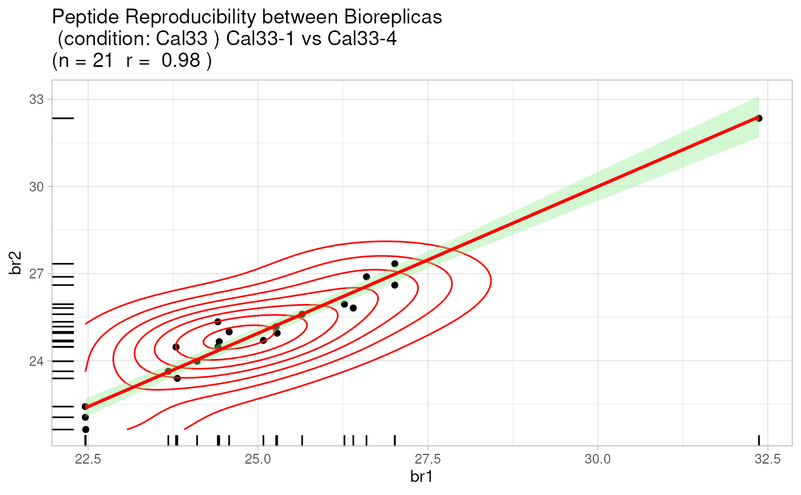
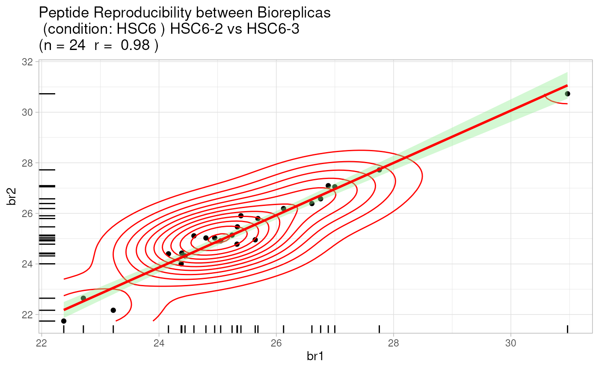

Quality Control analysis of the MaxQuant evidence file
Source:R/qualityControlEvidenceBasic.R
artmsQualityControlEvidenceBasic.RdQuality Control analysis of the MaxQuant evidence file
Usage
artmsQualityControlEvidenceBasic(
evidence_file,
keys_file,
prot_exp = c("AB", "PH", "UB", "AC", "APMS", "PTM:XXX:yy"),
output_dir = "qc_basic",
output_name = "qcBasic_evidence",
isSILAC = FALSE,
plotINTDIST = FALSE,
plotREPRO = FALSE,
plotCORMAT = TRUE,
plotINTMISC = TRUE,
plotPTMSTATS = TRUE,
printPDF = TRUE,
verbose = TRUE
)Arguments
- evidence_file
(char or data.frame) The evidence file path and name, or data.frame
- keys_file
(char or data.frame) The keys file path and name or data.frame
- prot_exp
(char) Proteomics experiment. 6 options available:
APMS: affinity purification mass spectrometryAB: protein abundancePH: protein phosphorylationUB: protein ubiquitination (aka ubiquitylation)AC: protein acetylationPTM:XXX:yy: User defined PTM. Replace XXX with 1 or more 1-letter amino acid codes on which to find modifications (all uppercase). Replace yy with modification name used within the evidence file (require lowercase characters). Example for phosphorylation:PTM:STY:phwill find modifications on aa S,T,Y with this example format_AAGGAPS(ph)PPPPVR_. This means that the user could select phosphorylation asPHorPTM:STY:ph
- output_dir
(char) Name for the folder to output the results plots. Default is "qc_basic".
- output_name
(char) prefix output name (no extension). Default: "qcBasic_evidence"
- isSILAC
if
TRUEprocesses SILAC input files. Default isFALSE- plotINTDIST
if
TRUEplots both Box-dot plot and Jitter plot of biological replicates based on MS (raw) intensity values, otherwiseFALSE(default)- plotREPRO
if
TRUEplots a correlation dotplot for all the combinations of biological replicates of conditions, based on MS Intensity values using features (peptide+charge). OtherwiseFALSE(default)- plotCORMAT
if
TRUE(default) plots aCorrelation matrix for all the biological replicates using MS Intensity values,
Clustering matrix of the MS Intensities
- plotINTMISC
if
TRUE(default) plots several pages, including bar plots of Total Sum of Intensities in BioReplicates, Total Sum of Intensities in Conditions, Total Peptide Counts in BioReplicates, Total Peptide Counts in conditions separated by categories:CON: contaminants,PROTpeptides,REVreversed sequences used by MaxQuant to estimate the FDR; Box plots of MS Intensity values per biological replicates and conditions; bar plots of total intensity (excluding contaminants) by bioreplicates and conditions; Barplots of total feature counts by bioreplicates and conditions.- plotPTMSTATS
IF
TRUE(default) plots stats related to the selected modification, including: bar plot of peptide counts and intensities, broken byPTM/othercategories; bar plots of total sum-up of MS intensity values by other/PTM categories.- printPDF
If
TRUE(default) prints out the pdfs. Warning: plot objects are not returned due to the large number of them.- verbose
(logical)
TRUE(default) shows function messages
Examples
artmsQualityControlEvidenceBasic(evidence_file = artms_data_ph_evidence,
keys_file = artms_data_ph_keys,
prot_exp = "PH",
isSILAC = FALSE,
plotINTDIST = FALSE,
plotREPRO = TRUE,
plotCORMAT = FALSE,
plotINTMISC = FALSE,
plotPTMSTATS = FALSE,
printPDF = FALSE,
verbose = FALSE)


# But we recommend the following test:
# 1. Go to a working directory:
# setwd("/path/to/your/working/directory/")
# 2. Run the following command to print out all the pdf files
# artmsQualityControlEvidenceBasic(evidence_file = artms_data_ph_evidence,
# keys_file = artms_data_ph_keys,
# prot_exp = "PH")
# 3. Check your working directory and you should find pdf files with
# all the QC plots